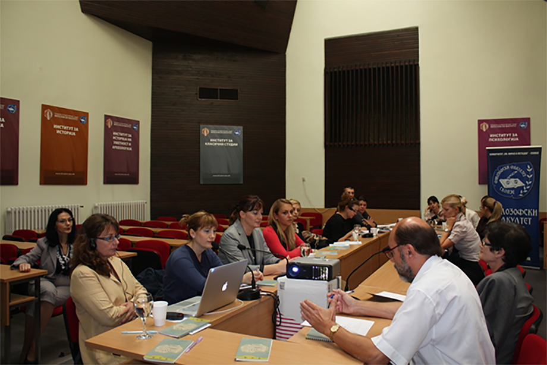
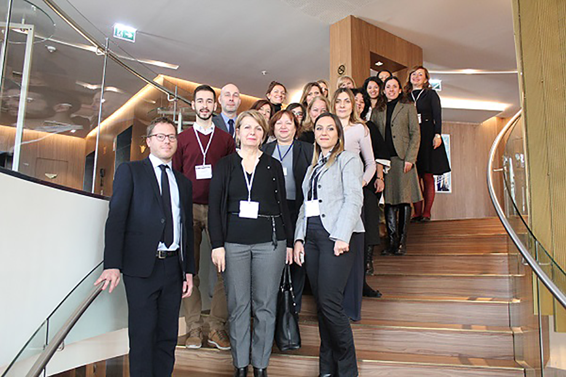
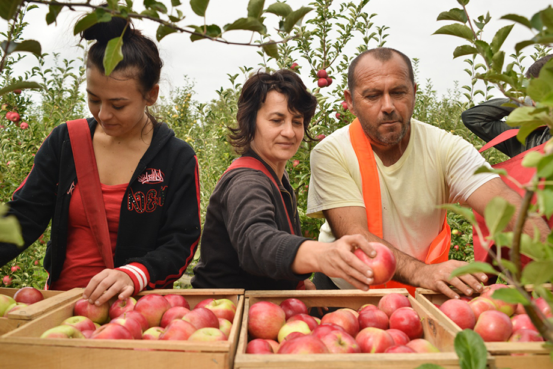
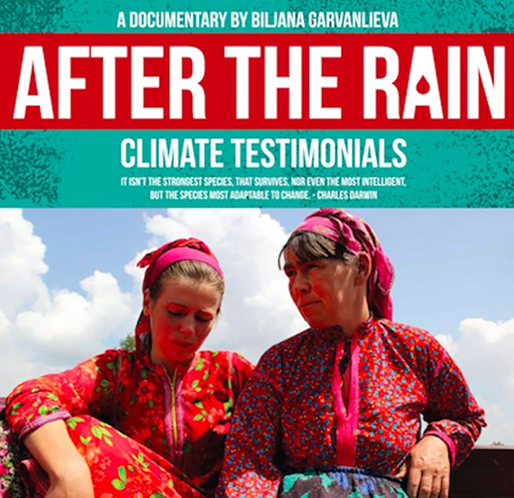
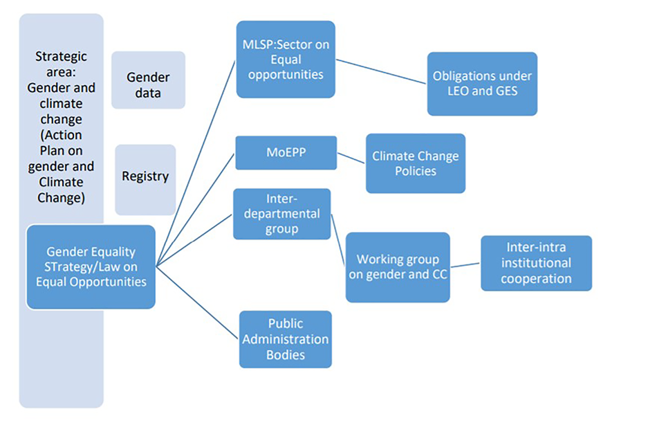
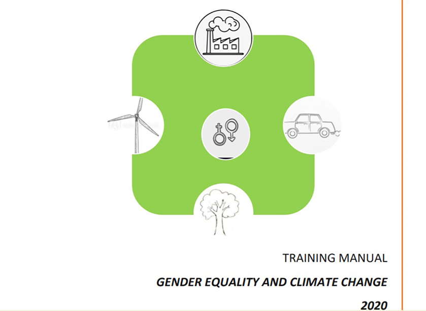
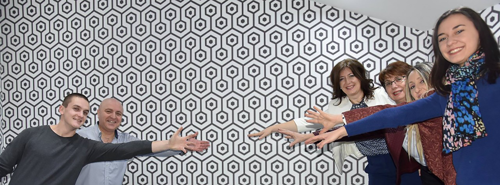
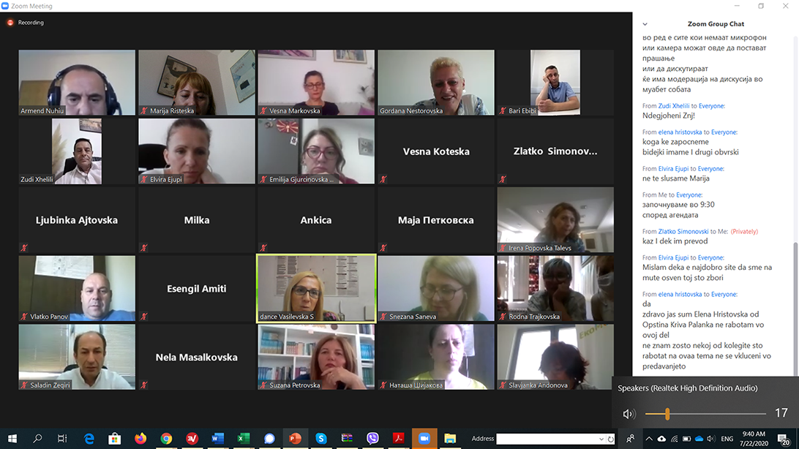
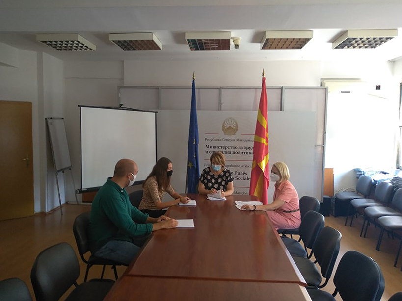
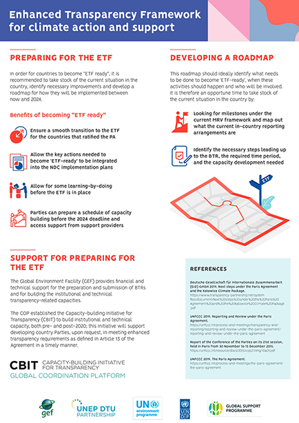

Applying a Gender Lens to the Climate Change report
This report provides an assessment of the gender implications of climate change impacts, mitigation, adaptation and policy in Macedonia. It focuses on key vulnerable sectors (Agriculture, Disaster Risk Reduction, Health) as well as communications, training and general Climate Change policy measures.

GSP (The Global Support Programme for National Communications and Biennial Update)
In 2017 the GSP has initiated a three-year pilot programme for five Western Balkan countries (Albania, Bosnia and Herzegovina, Montenegro, North Macedonia and Serbia-and Lebanon), to support the integration of gender equality considerations into climate
reporting, in accordance with UNFCCC’s guidance and GEF’s gender policy and action plan.
'Summary of experiences and lessons learnt'
Macedonian draft Action Plan for Mainstreaming Gender in Climate Change
This Plan suggests step by step activities how to mainstream gender equality in the development process of Biennial Update Reports and National Communications on Climate Change (UNFCCC reporting documents).

Socio-economic analysis - Household heating in Skopje
Heating practices in Skopje are significant contributor to low air quality in the city and climate change. Innovative approaches in data collection, analyses and visualization resulted in comprehensive pool of data disaggregated by sex. Complemented with socio-economics analysis that pinpointed the most vulnerable groups, it resulted in the first HOW TO transform governmental policies using gender sensitive climate data.

Climate data and gender - Country specific examples
Take a look at these 5 stories, 5 bold examples of how mainstreaming gender can increase climate ambition:
- Household heating
- Transport
- Green jobs
- Girls in tech
- Agriculture
Professional support provided
Ms. Olgica Apostolova engaged as a national gender consultant to support the integration of a gender perspective into climate change.

UNFCC Gender Focal Point nominated
Ms. Elena Grozdanova, State Advisory on Equal Opportunities on Women and Men, Ministry of Labor and Social Policy, nominated as UNFCCC Gender & Climate Change Focal Point

Intersections of gender and climate change policies
What needs to be done to have gender responsive climate policies and climate resilient gender policies (weaknesses, recommendations for improvement, proposed body to monitor and support implementation of planned activities).
Mobilize women political groups as gender and climate change advocates
In November 2019, the first Parliamentary debate on gender and climate change was organized and as a result, a comprehensive list of conclusions and recommendations were developed for future engagement in this regard.

Training module on gender and climate change
This module provides methods and content for trainings for the gender machinery in state administration bodies and civil servants working on the design and implementation of policies to tackle climate change.

Network on gender and Climate Change practitioners
Network of persons working in the field of gender equality and climate change at the administrative level, comprising 319 representatives on both national and local level (61% women).

Trainings on gender and Climate Change
Representatives of the Macedonian gender and climate change network at local and central level trained for the first time on gender and climate change intersection and its reflecting into the local and central policies and practice. The training ensured that the policymakers and implementers understand why gender is an important issue in tackling climate change, how gender is linked to climate change and how to incorporate gender perspectives into climate change policy documents.

A project unit on Gender and Climate Change established at Ministry of labor and Social Policy (MLSP)
The Unit will support the work of the MLSP to closely support integration of climate change into new Gender Equality Strategy

Communication materials
A picture is worth a 1000 words. Take a look at these visual products
Monitoring implementation
Gender disaggregated data are important, but to monitor efficient implementation of gender responsive #ClimateActions, corresponding indicators are needed (under development).